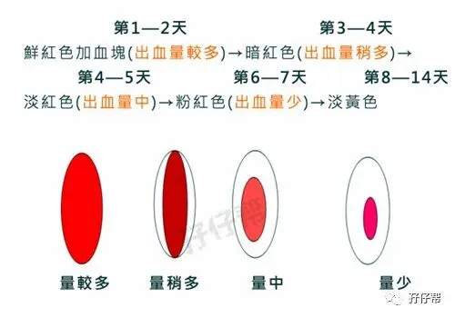
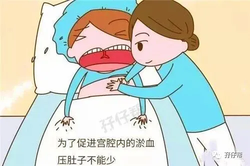
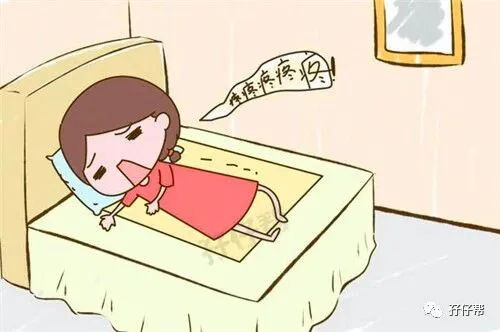
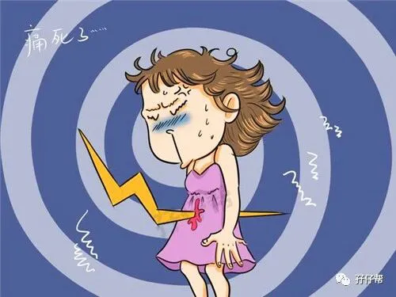
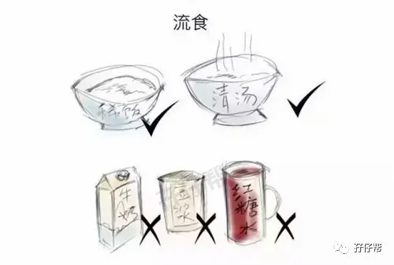
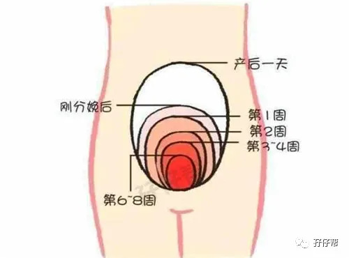
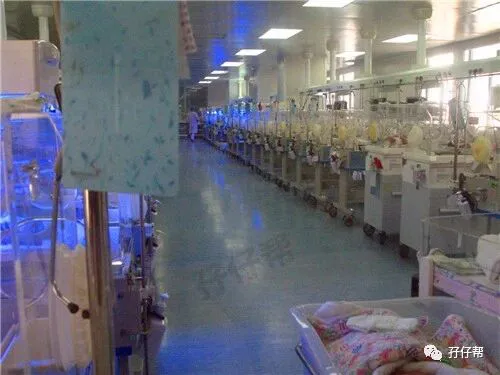
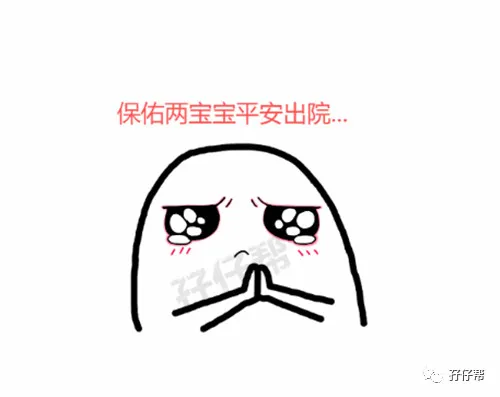
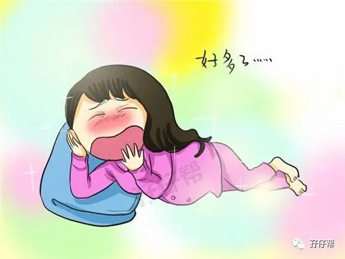

欢迎关注孖仔帮～
★ 前言 ★
我是圆圈妈，孖仔帮接下来分享圆圈妈（sgguy.com）的双胎子宫日记系列推文之双胎妈妈剖腹产的注意事项（分术前，术中，术后）
这是圆圈妈的剖腹产全过程记实录的姊妹篇，因篇幅较长，将分为三部分，分别是
1. 双胎子宫日记|双胎剖腹产回忆录之术前准备篇
2. 双胎子宫日记双胎剖腹产回忆录之手术进行中
3. 双胎子宫日记|双胎剖腹产回忆录之术后护理篇
备注：图片来源于网络，考虑到孕妈咪的产前心情，图片大多都采用搞笑漫画形式，让剖腹产没那么恐怖。
剖腹产毕竟是大手术，如果你的体质差，术后很容易感染其他的炎症。
因为剖腹后使身体的完整性发生一定的破坏，同时，容易造成盆腔的感染和肠管的粘连等症状。
因此，术后产妇的护理就显得非常重要了。
继孖仔帮sgguy.com上一篇推文《双胎子宫日记|双胎剖腹产回忆录之手术进行中》，这一期推文主要是说说剖宫产手术后的产后护理注意事项.
01
有任何异常情况，请找医生
据说术后的两三个小时是最危险的，当时我咳嗽那几声，为何医生那么紧张，后面才了解到，值班医生担心我发生产后并发症，如穷凶极恶的羊水塞栓。
恶露能直接反应子宫收缩和复原的情况，陪护的人除了勤换产褥垫，还要观察恶露的排量。如有异常的出血，请一定要通知医生。
因此术后，请必须保证有一个靠谱的人全程伺候着术后虚弱的你，可别熬过了手术台那一关却败给了猪一样的队友。
最好是孩子他们的爹，因为很多东西需要老公亲自去处理，比如签署一些告知书，或及时更换产褥垫（会有很多恶露排出）
在此，感谢圆圈爸！
刚下手术台那会儿，因为我突发妊娠后高血压，圆圈爸整夜一直盯着心电监护仪，隔一会就推一下我，叫一下我，看看我有没有反应，我也是醉了。
还有，他整个过程，一直忙碌奔波，鞍前马后，圆圈兄弟有这样的爸爸一定会很自豪的！
02
术后按肚子
如果可以，请护士教你或者陪护的人学习如何按肚子，由你自己掌握力度。
这样会减少痛的死去活来那种惨状发生，至少不会像我那样至今对护士有阴影。
如果非要护士按肚子，那请在按肚子之前跟护士好好沟通下，并在按肚子的过程中及时地跟她交流下你的感受。
不管谁按肚子，都会很痛。没办法，认命吧！
03
术后翻身
通常护士会建议让家属协助你翻身。且慢！
看你自己的实际情况，选择你觉得最不痛的方式翻身。
让家属协助翻身其实更痛，因为他们不知道怎么协助你，分不清轻重，往往会帮倒忙。
我拒绝圆圈爸的帮忙，扶着围栏自己把握翻身的角度和幅度。
起初只需要轻轻地左右扭动下，然后再提高扭动的幅度，慢慢过渡到侧躺，接着换另外一边，重复那样的动作，多翻几次就没那么疼。
04
术后第一次下床
准备工作很重要，先拿个小板凳放床边，把病床调到半躺的状态，让家属扶着，慢慢坐起来，
此刻，别急！慢！慢！慢！坐起来！
坐起来那会儿会很痛，把双脚放在事先准备好的小板凳上，缓一下，找下感觉，适应下这种痛。
感觉差不多了，就尝试着把双脚往地上放，屁股也跟着床缘边上挪，双脚着地之前，确定左右两边有家属严阵以待，防止重心不稳摔倒。
双臂可搭在两旁家属的脖子上，由他们把你凌空架住，然后你再慢慢找感觉让双脚着地，直到你觉得可以松开搭在家属身上的手臂，靠自己的力量完全站稳了。
这时就是最痛的时候了，熬过这个痛，后面就好点了。
紧接着，就要踏出第一步了，依然由两边的家属相互配合扶着你，看你怎么方便，可以继续搭在他们的脖子上，也可以由他们搀扶着。
第一次下床会比较痛苦，后面慢慢习惯了就没那么痛了。
我第二次下床，就不用圆圈爸扶着了，自己摸索着床边栏杆和扶手，一步步地挪到厕所去。
因为不习惯上厕所的时候有人在边上看着，即使那个人是我老公，我也觉得很别扭！
05
术后饮食
一般医生建议排气之后再吃东西，但也有些医生说不用等排气也可以喝水+吃点流质食物。
我是等到排气之后才敢吃东西，一开始是稀饭和米汤（牛奶豆浆红糖水不建议喝），接着慢慢过渡到馒头面条。
若没有特殊情况，且胃口好，就可以正常饮食了，如吃点青菜，鱼肉，鸡肉，补充能量，注意辛辣刺激难消化的食物不要吃。
06
术后拔尿管
不管是什么理由，怕疼还是懒得动，都建议你及早拔掉导尿管，然后下床解小便。
时间越长越容易出现膀胱麻痹、小便困难而需要再次留置导尿。
很多宝妈反应拔尿管很痛。其实还好吧，只是有点不舒服，并没有很痛，相比阵痛和按肚子的痛，简直是小意思。
07
术后催奶
产后通常会有初乳，但是由于个体差异，每个新晋妈咪初乳的时间并不相同，如果产后短时间内没有乳汁的话，建议让新生儿多吸吮，这样有利于乳汁的产生。
双胎宝宝通常会早产，一般都会送入新生儿科观察，或者进保温箱。
若宝宝们不在身边，可以用吸奶器，可促进乳汁的产生和疏通乳腺。
08
产后肚子依然很大
这个除非神仙驾到，魔法棒一晃，瞬间恢复孕前的婀娜多姿，但那是不现实的。
这需要点时间去恢复，我生产完后的肚子依然很大，好像还有一个足月的宝宝在里面没有取出来似的。
恢复到孕前身材也是因人而异，快则三个月，慢则一年半载。
我产后六个月才让人感觉，我不再是孕妇的样子。等圆圈一岁半之后，基本上恢复到孕前身材。
我没有刻意去减肥，同时照顾两个小婴儿就是全世界最省钱最有效的减肥办法，没有之一！
09
探视两宝宝
每个医院都有规定新生儿的探视时间，对于两宝宝不在身边的宝妈来说，最激动人心的时刻莫过于去新生儿科探视宝宝了。
去探视的时候，家属是不允许进入NICU的，只能隔着玻璃看，每一个宝宝的小病床上都贴着姓名和床号。
如果宝宝还没有起名字，通常默认是孕产妇的姓名+备注大宝或小宝，如圆圈妈大B，圆圈妈小B
有些医院还会安排宝宝的主治医生跟家属简单介绍病情。此时，请不要被医生的各种专业术语吓到。
宝妈可以把要问的问题提前准备好，但最好不要问“宝宝严重吗？”“什么时候可以出院？”诸如此类的问题。
这些问题没有医生会给正面回复，一般医生都是报喜不报忧的，担心刺激到产妇的幼小心灵。
记住一个浅显的道理，只要医院不给你电话，那就是好消息。
留医部逢周二周四的下午三点钟---四点钟之间是探视时间。
因时间有限，我从来不去问医生圆圈的情况，而是抓紧时间隔着玻璃好好看看瘦瘦小小的圆圆圈圈。
看着他们浑身上下插着管子，蠕动着。我的眼泪刷刷地流，第一次深刻感觉到我做妈妈了，而且是两个孩子的妈妈！
那是产后第一次放肆的大哭，把保胎期间的郁闷，产时的恐惧，产后的疼痛，全部一次性哭出来了。
去他大爷的产后坐月子不能哭，哭完之后，我整个人都爽极了。
10
卸货后，宝妈的心情
宝宝们不在身边，新晋妈咪确实心里空荡荡的很不好受，此时切忌玻璃心。
须知道对于早产儿宝宝来说，在新生儿科待着是最安全的。
升级妈妈之后唯一能做且对宝宝们有益的就是抓紧时间吃好睡好，争取早日恢复体力精力。过分的担心都是多余的，只会徒添烦恼和不必要的麻烦。
因此，新妈咪只管吃喝睡，养精蓄锐，才能以最好的状态迎接宝宝们出院，然后倾尽一生去抚养他们长大成人。
我对圆圈刚出生不在身边，一点失落感都没有，反而很庆幸，有新生儿科的医生护士看着，我非常放心。
11
术后使用止痛泵和产后腰疼
原来止痛泵不是找麻醉师开药的，下手术台有主治医生会评估产后情况或者孕产妇自身要求，判断是否需要用止痛泵。
囧！我还让人家麻醉师发毒誓。神啊，快拿豆腐块把我砸晕吧！
你也许会担心使用止痛泵带来的副作用，尤其是剖腹产的宝妈，普遍反应经常腰痛可能跟术中用了麻醉药有关。
我不是医生，不敢妄自评论麻醉药的优势劣势，也许有直接或者间接的关系，我也不清楚顺产的宝妈是不是就不会腰疼。
但，留得青山在不怕没柴烧。拒绝逞能！想用就用呗！
我也是产后经常腰痛，但只是双侧轻微的酸痛，圆圈半岁之后，腰酸腰痛的情况逐渐减少。
但是即便有专家很肯定地告诉我，使用止痛泵会有副作用，我依然会主动要求用止痛药，而且必须是全世界最好的止痛药。
我倒觉得腰痛和坐月子有很大关系，我在月子期间很少抱圆圈，虽然很想抱。
觉得产后坐月子很重要，并不是一定要各种鸡鸭鱼肉大吃大喝，而是科学均衡的饮食+充足的睡眠+积极乐观的心态。
圆圈妈有话说
基本上该分享的都写出来了，可能还有些遗漏，毕竟都过去三年了，都是从孕期日记中一点点整理出来的。
若经验中没有提到双胎宝妈要关心的其他问题，可以留言或者加圆圈妈微信咨询我。
不用客气，欢迎双胎妈妈骚扰我，提出你们的双胎孕期育儿的疑问。只要我经历过，圆圈妈都会不吝惜分享的哈！
最后，感恩！谢谢大家对圆圈妈的认可，对孖仔帮sgguy.com的支持和关注！
重磅，后面会有圆圈妈的双胎子宫日记系列推文，主要是分享双胎孕期不同孕周阶段的心得体会，包括饮食，睡眠，产检，胎动等。
真人真事哦！主角当然是圆圈妈啦！哈哈！
BUT！需要点时间，圆圈妈会努力更新出来的啦！敬请期待吧！
END
温馨提示：
上期推文：
1. 双胎子宫日记|双胎剖腹产回忆录之术前准备篇
2. 双胎子宫日记|双胎剖腹产回忆录之手术进行中
本文系圆圈妈V-昊sgguy-ocm原创，来源于孖仔帮，专注双胞胎孕期育儿经验分享，著作权归孖仔帮所有。
各位双胎妈妈，更多孖仔帮原创育儿文章请猛戳 "阅读原文" ，或者直接上圆圈妈的个人博客，大把双胎孕期育儿心得经验分享。









